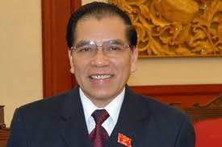

TỔNG BÍ THƯ NÔNG ĐỨC MẠNH
 Đồng chí Nông Đức Mạnh sinh ngày 11-09-1940 tại xã Cường Lợi, huyện Na Rì, tỉnh Bắc Kạn. Đồng chí xuất thân trong gia đình nông dân dân tộc Tày, bản thân là công nhân lâm nghiệp. Đồng chí tham gia cách mạng năm 1958 và được kết nạp vào Đảng năm 1963.
Năm 1958-1961, đồng chí học trung cấp nông lâm trung ương. Năm 1962-1963, đồng chí là công nhân lâm nghiệp, kỹ thuật viên điều tra trongTy lâm nghiệp Bắc Kạn. Từ năm 1963-1965, đồng chí làm đội phó đội khai thác gỗ Bạch Thông. Năm 1965-1966, đồng chí học tiếng Nga tại trường ngoại ngữ Hà Nội. Từ 1966-1971, đồng chí là sinh viên Học viện Lâm nghiệp Lêningrát, Liên Xô.
Năm 1972, trở về nước, đồng chí được phân công làm Phó Ban thanh tra Ty lâm nghiệp tỉnh Bắc Thái. Năm 1973-1974, đồng chí làm Giám đốc Lâm trường Phú Lương, Bắc Thái. Từ 1974-1976, đồng chí được cử đi học tại Trường Đảng cao cấp Nguyễn Ái Quốc.
Năm 1976-1980, về Bắc Thái, đồng chí là Tỉnh uỷ viên, Phó Ty lâm nghiệp tỉnh Bắc Thái kiêm chủ nhiệm Công ty xây dựng lâm nghiệp rồi trưởng Ty lâm nghiệp tỉnh Bắc Thái. Từ 1980-1983, đồng chí là Tỉnh uỷ viên, Phó Chủ tịch Uỷ ban nhân dân tỉnh Bắc Thái. Từ 1984-10/1986, đồng chí làm Phó Bí thư Tỉnh uỷ, chủ tịch Uỷ ban nhân dân tỉnh Bắc Thái. Từ tháng 11/1986 - 02/1989, đồng chí làm Bí thư Tỉnh uỷ Bắc Thái.
Tại Đại hội đại biểu toàn quốc lần thứ VI của Đảng, đồng chí Nông Đức Mạnh được bầu làm Uỷ viên dự khuyết Ban chấp hành trung ương Đảng. Tháng 03-1989, đồng chí được phân công làm Trưởng ban dân tộc trung ương. Tháng 11-1989, đồng chí được bầu bổ sung Đại biểu Quốc hội khoá VIII và được bầu làm Phó chủ tịch Hội đồng dân tộc của Quốc hội.
Tại Đại hội đại biểu toàn quốc lần thứ VII của Đảng, đồng chí được bầu vào Ban chấp hành Trung ương Đảng và được trung ương bầu vào Bộ chính trị. Tháng 09-1992, đồng chí làm Chủ tịch Quốc hội khóa IX. Tại Đại hội đại biểu toàn quốc lần thứ VIII của Đảng, đồng chí được bầu vào Ban chấp hành Trung ương Đảng, được trung ương bầu vào Bộ chính trị.
Tháng 09-1997, đồng chí giữ cương vị Chủ tịch Quốc hội khoá X và được phân công làm thường vụ Bộ chính trị vào tháng 01-1998.
Tháng 04-2001, tại Đại hội đại biểu toàn quốc lần thứ IX của Đảng, đồng chí Nông Đức Mạnh được trung ương bầu làm Tổng Bí thư của Đảng cộng sản Việt Nam. Năm 2006, tại Đại hội đại biểu toàn quốc lần thứ X của Đảng, đồng chí Nông Đức Mạnh tiếp tục được bầu giữ chức Tổng Bí thư Ban Chấp hành Trung ương Đảng.